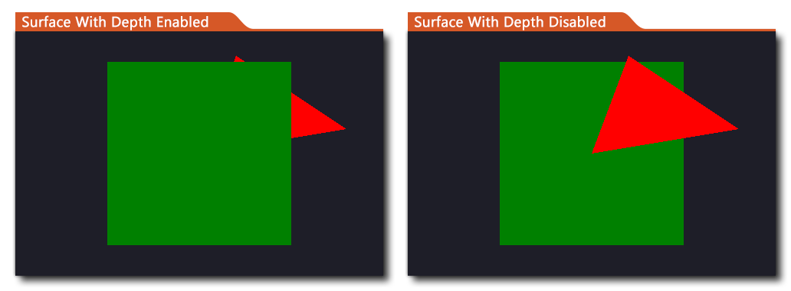

This function disables the automatic depth buffer generation for all surfaces that are created after it has been disabled. Normally all surfaces have depth buffers so if you draw 3D objects to them then it'll sort them properly by depth in order to maintain functional parity between rendering to surfaces and rendering to the back buffer, however allocating depth buffers essentially doubles the amount of memory required for surfaces, which could be an excessive and unnecessary overhead especially if your game is very memory intensive, and for 2D games they aren't generally required.
To use this function you would call it before creating a surface, and then you can enable it again after (if required). All surfaces created when the depth buffer is disabled will no longer use a depth buffer when being drawn to, this results in the things being drawn to the surface having parity of depth. The images below illustrate this in practice: 
In the above image, we are drawing a rectangle and a triangle using a vertex buffer in 3D. The coordinates for the red triangle places it behind the green rectangle, but the code for drawing the triangle is called after the code for the rectangle, and when the depth buffer is enabled, the triangle is still drawn behind the rectangle as the 3D depth is being respected. However when we disable the depth buffer for the surface, only the code order is respected and so the triangle is drawn over the rectangle.
NOTE: To properly preserve depth in 3D when using surfaces, not only should you have the depth buffer enabled, but you should also have z-writing and z-testing enabled. See the functions gpu_set_ztestenable() and gpu_set_zwriteenable() for more information.NOTE: If your game is 100% 2D or you know that you don't need a surface depth buffer, then it should be fine to simply call this function once at the start of the game to disable the buffer.
surface_depth_disable(disable);
| Argument | Description |
|---|---|
| disable | If set to true the depth buffer will be disabled for created surfaces. |
N/A
var _depth_setting =
surface_get_depth_disable();
surface_depth_disable(false);
surface_with_depth = surface_create(room_width, room_height);
surface_depth_disable(true);
surface_without_depth = surface_create(room_width,
room_height);
surface_depth_disable(_depth_setting);
The above code stores the current depth buffer setting in a variable and then creates two surfaces, one with depth buffering enabled and one without, before restoring the original setting again.